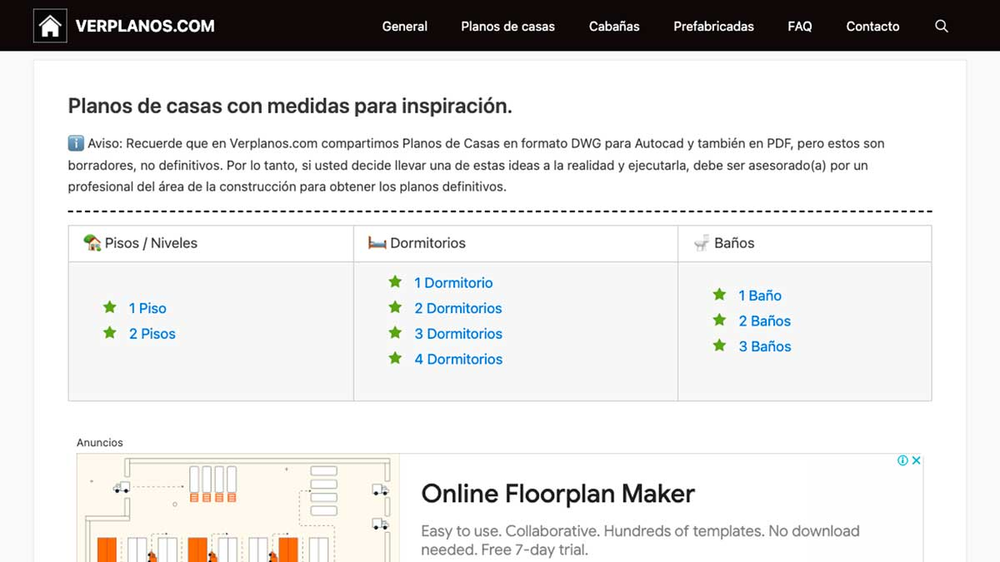

Portafolio - Proyectos
| Descripción | Vista Previa |
|---|---|
Currículum Vitae (CV)
Sitio creado con tecnologías básicas tales como HTML, CSS y JS. Usando librerías para el
maquetado y diseño web tales como: Bootstrap.
|

|
Verificador RUT Chileno
Sitio para verificar que formato y forma de RUT chileno esté correcto. Usando
tecnologías
como HTML, CSS para la maquetación y JavaScript para la validación del formato del RUT.
|

|
"BSALE Challenge!"
Desarrollo fullstack para exponer una lista de productos como catálogo en un sitio
con buscador. Desafío de la empresa "BSale".
Backend: Node.js y Express.js más MySQL community como gestor de BD relacional. Frontend: HTML, CSS y JavaScript Vanilla. |

|
Verplanos.com
Sitio web creado con Wordpress y administrado por mi. Es una revista online de planos y
modelos de casas con una comunidad en Youtube de más 600 mil suscriptores.
Ver Proyecto
|
 |